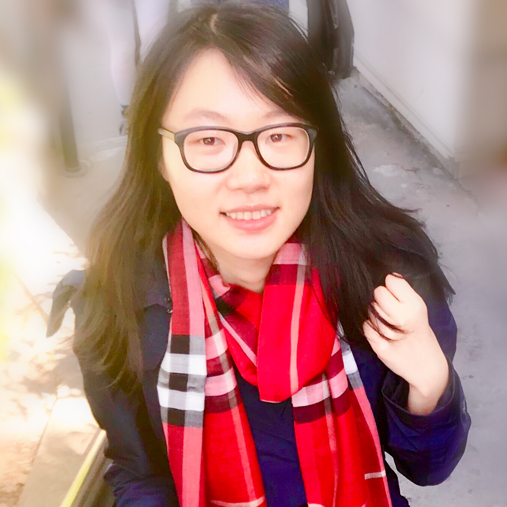

【HOME】 【PUBLICATIONS】 【GITHUB】
 Chuhang Zou
Ph.D.
Vision Group
University of Illinois at Urbana-Champaign
Email: czou4 [at] illinois.edu
I obtained the Ph.D. in Computer Science at University of Illinois at Urbana-Champaign, working with Prof. Derek Hoiem. I also worked closely with Prof. David Forsyth. Before that, I received the B.S. degree in Computer Science at Zhejiang University, advised by Prof. Deng Cai.
My research interests lie in the areas of computer vision. My research to date focuses on 3D deep learning, visual scene understanding and 3D shape reconstruction.
I was a summer intern student at University of California, Los Angeles in 2013, working with Prof. Alan Yuille on 3D scene estimation. I interned at Google DayDream (summer 2015), Adobe Research (summer 2016), Zillow 3D vision team (summer 2017) and Nvidia Research (summer 2018).